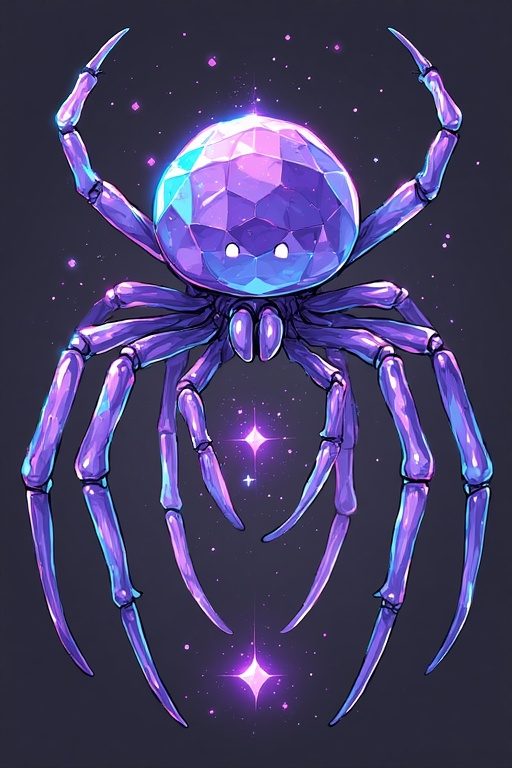

The Obsidian Veil Calendar: Cerulean Echoes – Directors Cut Edition

Enter the digital veil, where time glitches like a malfunctioning program. Mark your days in cerulean code, but beware the loops that echo forever. Less gore, more eerie isolation—Tron meets psychological horror.